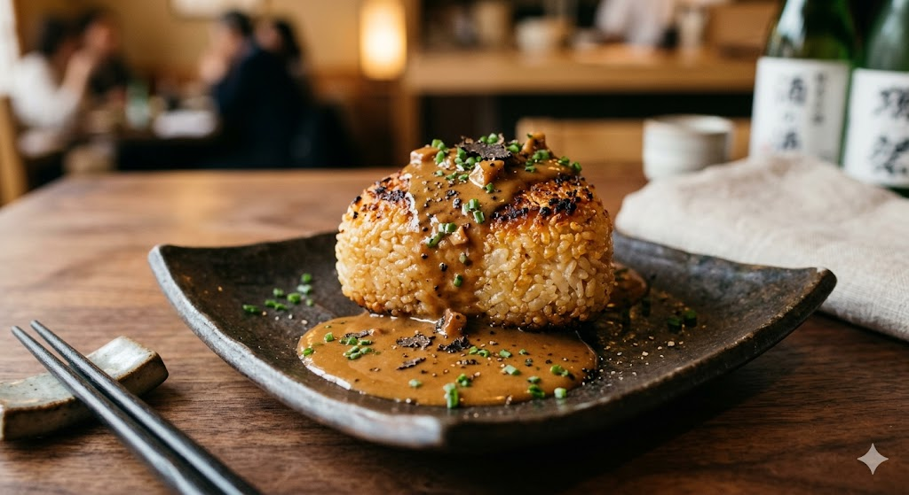

Reservation Privilege
和の魂が宿る「おにぎり」と、フランス料理の象徴「フォアグラ」。
炭火で香ばしく焼き上げた端城産のお米に、濃厚なソースが絡み合う。一口食べれば、そこには国境を超えた美食の景色が広がります。

阪神淡路大震災を神戸で、東日本大震災を仙台で。二度の震災を経て私が行き着いたのは、目の前にある食材の尊さ、そしてそれを作る生産者の情熱でした。
端城には、驚くほど豊かな海と山があります。私の仕事は、複雑な調理で素材を隠すことではありません。フレンチの技法という「言葉」を使い、端城の食材が持つポテンシャルを最大限に引き出す。それが、私たちが掲げる「創造的フレンチ」の正体です。
13
YEARS HISTORY
200
VINS NATURES
〒980-0014 宮城県仙台市青葉区本町1丁目10-15
※仙台駅から徒歩15分。大通りに面しており、隣には大きな有料パーキングがございます。
おまかせコース制（完全予約制）
※一品ずつ丁寧に仕上げるため、お時間に余裕を持ってご予約ください。
初回来店のお客様へ、ウェルカムドリンクと
「伝説のテリーヌ」の特別提供を準備してお待ちしております。